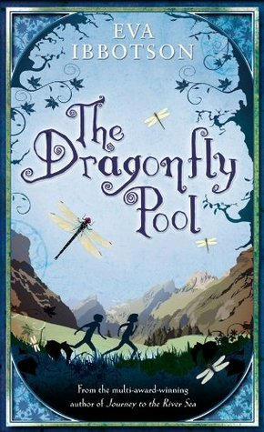
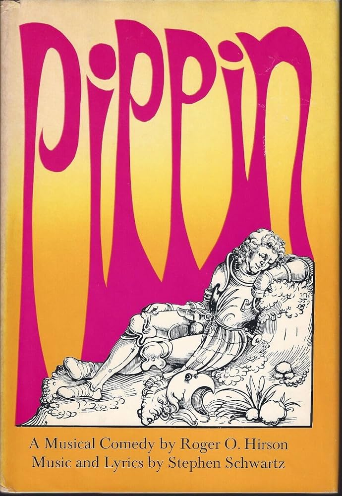
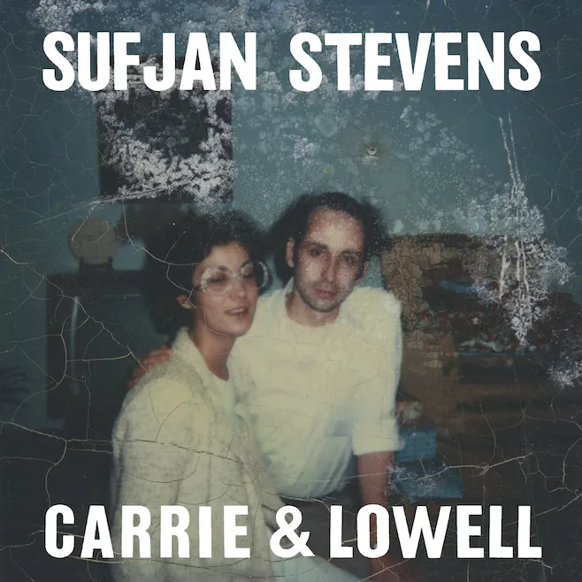
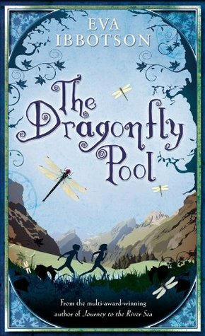
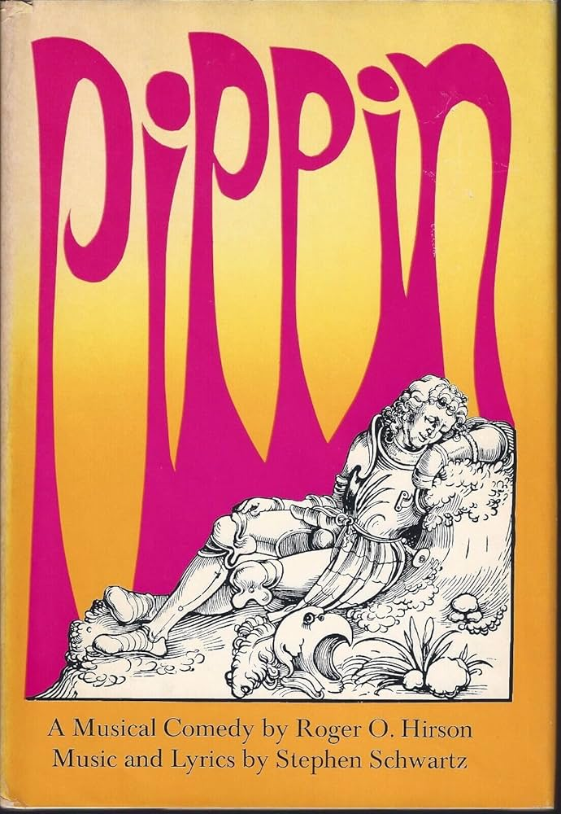
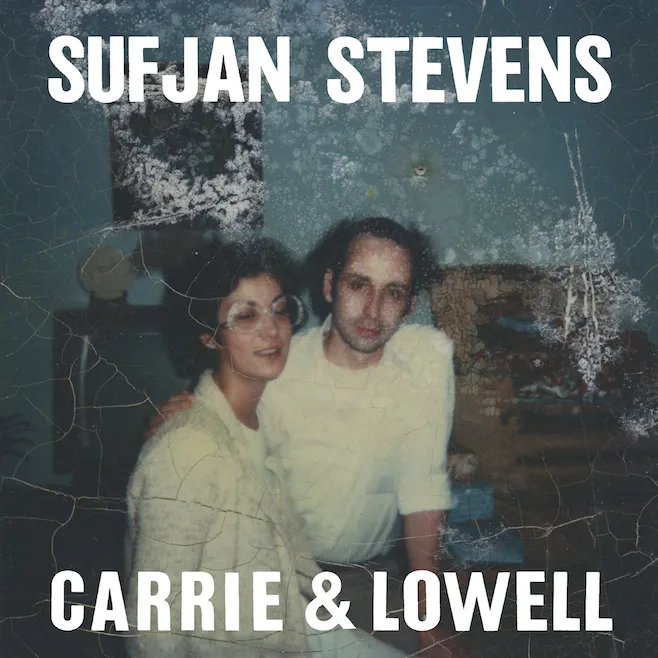
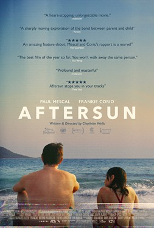
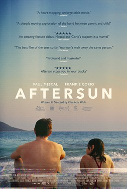

hello world! i'm Madhu 😎
I’m from Bangalore, India, but I moved to the US in my junior year of high school, and I’ve lived here since. I really like making things and I love seeing all the cool things other people make. My primary ambitions in life are to become undeniably funny, have a nice job that I like 75% of the time where I can keep making cool things, be a fun aunt, and have a home library. Here’s a collection of my interests and parts of who I am through my online presence– because that feels fitting for an interaction class.

 







 
